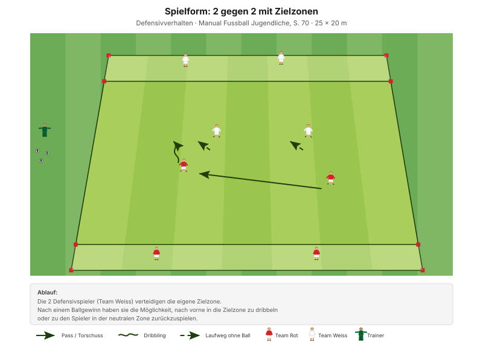
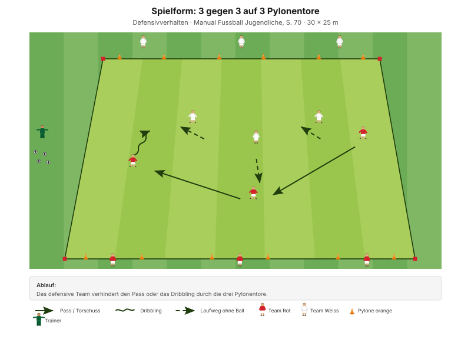

Zu zweit auf einen. Doppeln ist die wirksamste Art, den Ball zu erobern – und die riskanteste, weil hinter den beiden ein Loch entsteht. Deshalb gehört zum Doppeln immer die Absicherung.
"Defensive Zweikämpfe mutig und erfolgreich bestreiten" Erscheinungsform D2, Manual Fussball Jugendliche, S. 69
Die Faustregel des Abends: Gedoppelt wird nur an der Seitenlinie und nur, wenn der Ballführende den Rücken zum Spiel hat. In der Mitte und bei offenem Körper ist Doppeln ein Geschenk an den Gegner. Das ist eine eigene Ergänzung, keine Manual-Vorgabe – aber sie erspart viele Gegentore.
Das Manual fragt in den Entwicklungsfragen ausdrücklich "Wer kommuniziert wann, was, wie?", beantwortet es aber nicht. Für D-Junioren reichen drei feste Kommandos:
Diese drei Rufe stehen so nicht in den J+S-Unterlagen – sie sind eine eigene Ergänzung. Aus allgemeinem Fussballwissen: mehr als drei Kommandos merkt sich ein D-Junior im Spiel nicht.
| Zeit | Min | Teil | Inhalt |
|---|---|---|---|
| 0–4 | 4 | Besammlung | Thema ansagen, Gruppen einteilen |
| 4–16 | 12 | E1 | Ballführen und Tore durchdribbeln · Big 4 zwischen den Wiederholungen |
| 16–22 | 6 | E2 | Bälle jagen zu zweit |
| 22–30 | 8 | E3 | Sprint und Duell (Explosivität) |
| 30–45 | 15 | H1 | 2 gegen 2 mit Zielzonen |
| 45–48 | 3 | Pause | Trinken, Umbau |
| 48–70 | 22 | H2 | 3 gegen 3 auf 3 Pylonentore |
| 70–82 | 12 | Abschluss | Freies Spiel 5 gegen 5 plus 2 Torhüter |
| 82–90 | 8 | Ausklang | Cool-down, zwei Entwicklungsfragen, Verabschiedung |
| Total | 90 |
Einstieg 26 · Hauptteil 37 · Abschluss 20 Min. – nach dem Trainingsschema des Manuals (S. 43).
Nur einmal umbauen: Die Pylonentore des Einstiegs werden in der Pause zu den drei Toren von H2.
Eigene Skizze · Platzaufteilung
Nur einmal aufbauen – das Einstiegsfeld liegt im späteren Spielfeld.
12 Minuten · 32 × 24 m · alle 12 Spieler
Eigene Skizze · Ballführen und Tore durchdribbeln
3 Wiederholungen à 1'30''–2' – zwischen den Wiederholungen je zwei Präventionsübungen.
Derselbe Lernbaustein wie in D-1 – hier als Vorbereitung auf das Doppeln statt auf das Einzelduell.
"Tackeln in seitlicher Position (auf Vorderfuss) – Duell mit dem Körper führen" SFV-Lernbaustein "Einstieg TA: 1 gegen 1 defensiv", Phase 1
Je zwei Übungen zwischen den Wiederholungen, 25 Sekunden pro Übung:
| Bereich | Übung | Worauf achten |
|---|---|---|
| Fussgelenk | Einbeinsprünge seitlich | Bei der Landung knickt das Knie nicht ein, Oberkörper leicht nach vorne. |
| Knie | Miniband Side Steps | Miniband immer unter Spannung halten. |
| Hüfte | Mobilität in tiefer Position | Die Fersen bleiben in Kontakt mit dem Boden, Blick nach vorne. |
| Hamstrings | Standwaage mit Partner | Keine Rotation bei den Schlägen auf den Ball zulassen. |
"Arbeit mit Zeitvorgaben – nicht mit Anzahl Wiederholungen." Prinzip Körperstabilität, Manual Fussball Jugendliche, S. 75
Zwei Punkte pro Übung nennen, nicht mehr. Qualität vor Tempo.
6 Minuten · gleiches Feld · 3 Wiederholungen à 1'30''–2'
"Duelle suchen und mit dem Körper führen – Tackling (Gegner vom Ball trennen)" SFV-Lernbaustein "Einstieg TA: 1 gegen 1 defensiv", Phase 2
Die Zweier-Auflage ist eine eigene Ergänzung. Sie macht aus einer Zweikampfform in zehn Sekunden eine Doppelform – und zwingt zur Absprache, wer zuerst geht und wer den Weg abschneidet.
8 Minuten · 2 Bahnen · Paare bilden
| Parameter | Vorgabe |
|---|---|
| Distanz | 15–30 m |
| Wiederholungen | 3 |
| Pause zwischen Wiederholungen | 1/15 (Belastung × 15) |
| Serien | 3 |
| Pause zwischen Serien | 1'30''–2' |
"Erholungszeit: 10- bis 20-fache Dauer der Belastungszeit, abhängig von der Laufdistanz. Vollständig erholen zwischen den Wiederholungen." Prinzipien Explosivität, Manual Fussball Jugendliche, S. 72
25 × 20 m · 15 Minuten · 3 Felder parallel
Manual-Vorlage · Diagramm 38 "2 gegen 2 mit Zielzonen" (S. 70)

Drei Felder à 4 Spieler – alle 12 sind gleichzeitig aktiv.
"Die 2 Defensivspieler/innen verteidigen die eigene Zielzone. Nach einem Ballgewinn haben sie die Möglichkeit, nach vorne in die Zielzone zu dribbeln oder zu den Spieler/innen in der neutralen Zone zurückzuspielen." Spielform, Manual Fussball Jugendliche, S. 70 (Diagramm 38) · 25 × 20 Meter
Zwei gegen zwei ist die kleinste Einheit, in der Doppeln überhaupt möglich ist. Und weil es nur eine Zielzone zu verteidigen gibt, ist die Frage jedes Mal dieselbe: Gehen wir gemeinsam auf den Ballführenden, oder deckt jeder seinen Mann? Beides ist richtig – je nach Situation.
22 Minuten · 30 × 25 m · 2 Felder parallel
Manual-Vorlage · Diagramm 39 "3 gegen 3 auf 3 Pylonentore" (S. 70)

Zwei Felder parallel, damit alle 12 spielen – je 26 × 22 m.
"Das defensive Team verhindert den Pass oder das Dribbling durch die drei Pylonentore." Spielform, Manual Fussball Jugendliche, S. 70 (Diagramm 39) · 30 × 25 Meter
Drei Tore und drei Verteidiger – wer doppelt, lässt ein Tor unbesetzt. Das Doppeln muss also verdient sein: Es lohnt sich nur, wenn der Ball dadurch sofort gewonnen wird. Genau diese Abwägung fehlt im Spiel oft, und hier wird sie jede halbe Minute abgefragt.
12 Minuten · gleiches Feld, kein Umbau
Keine Auflagen, keine Bonusregeln. Hier wird sichtbar, was von den 70 Minuten davor hängen geblieben ist.
8 Minuten · Cool-down im Gehen, dann Kreis in der Mitte
Zuerst 3–4 Minuten lockeres Auslaufen und Mobilität, dann der Kreis. Zwei Fragen – die Antworten kommen von den Spielern, nicht vom Trainer:
"Habt ihr die gegnerischen Angriffe erfolgreich unterbunden? Wenn nein, welches Prinzip habt ihr vernachlässigt? Was müsst ihr verbessern (individuell/als Gruppe)?"
"Hast du kommuniziert? Wie kommunizierst du noch besser? Wer kommuniziert wann, was, wie?" Entwicklungsfragen zur Spielphase "Wir haben den Ball nicht", Manual Fussball Jugendliche, S. 69
Material aufräumen – laut Teamregel Respekt Teamarbeit, nicht Strafe.
| Teil | Vorlage | Seite |
|---|---|---|
| E1 – E3 | SFV-Lernbaustein "Einstieg TA: 1 gegen 1 defensiv", Phasen 1–3 (wie in D-1) | – |
| E2 (Zweier-Auflage) | Eigene Ergänzung zur Lernbaustein-Form "Bälle jagen" | – |
| H1 | Spielform "2 gegen 2 mit Zielzonen" (Diagramm 38) | 70 |
| H2 | Spielform "3 gegen 3 auf 3 Pylonentore" (Diagramm 39) | 70 |
| Ziele, Coaching, Entwicklungsfragen | Kapitelkopf "Wir haben den Ball nicht" | 69 |
| Faustregel zum Doppeln, die drei Rufe | Eigene Ergänzung | – |
| Explosivität, Körperstabilität | Athletik und Gesundheit | 72, 75 |
| Trainingsaufbau | Trainingsschema (Abb. 19) | 43–45 |
Alle Seitenangaben beziehen sich auf das J+S Manual Fussball Jugendliche (BASPO/SFV, 2022). Spielerzahlen und Feldmasse sind auf einen Kader von 12 Spielern angepasst. Dieser Trainingsplan wurde mit Unterstützung von KI (Claude, Anthropic) erstellt.